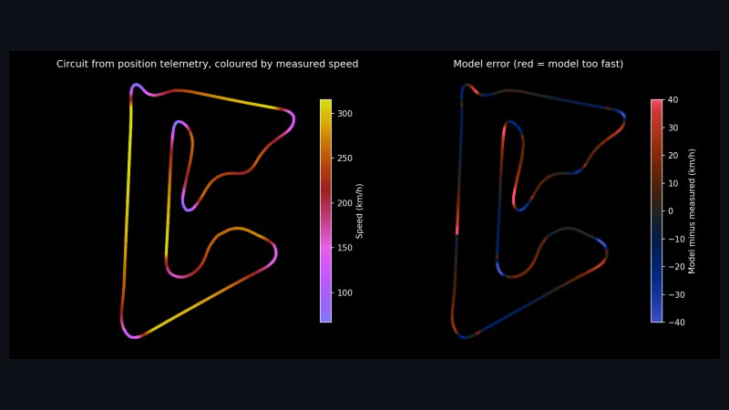
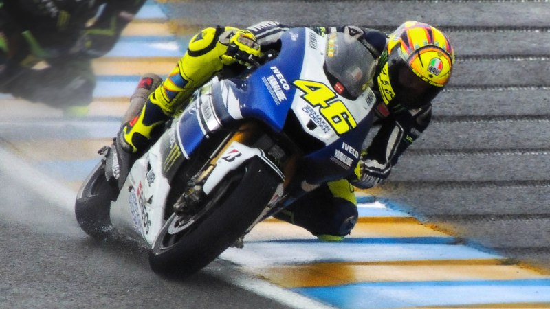
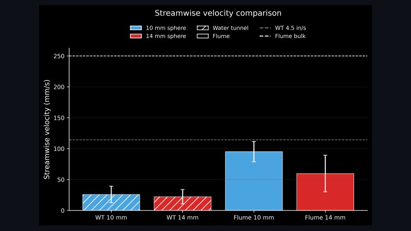
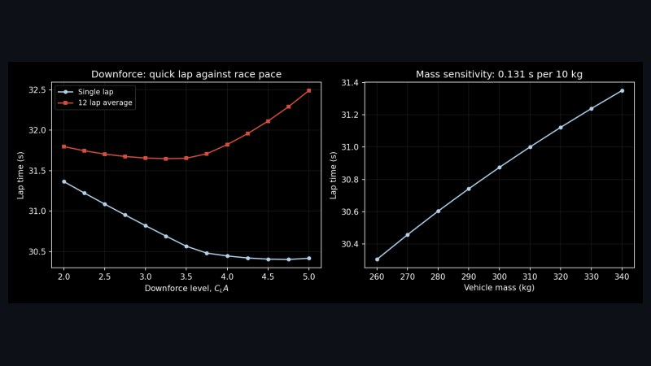
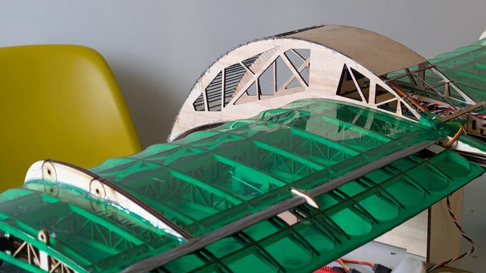
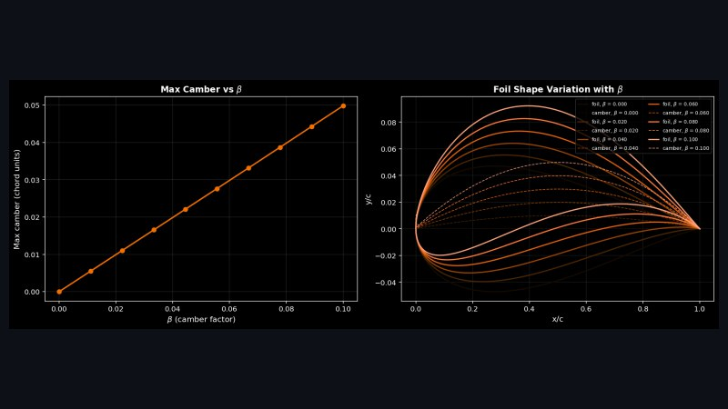

Featured work

Predicting an F1 Lap, and Checking It Against the Real One
A physics lap time model and a tyre degradation model validated against 2025 Bahrain Grand Prix telemetry. The model predicts the pole lap to within 0.7%, and evaluates 14,532 race strategies against the one that won the race. Run it yourself in the browser.
View project →
Cornering Aerodynamics of a MotoGP-Style Motorcycle
Final-year group design project combining CFD with wind tunnel testing. I am the team leader, the aerodynamic design lead, and the lead for CAD development and manufacture of the test model.
View project →About
I am in the final year of a four-year integrated MEng in Aeronautics and Astronautics at the University of Southampton, specialising in aerodynamics, and I graduate in July 2027. I completed my third year with a 71.7% first-class average.
My work combines design with quantitative analysis. I am most interested in problems that begin with physical hardware, such as a wing, a test rig or an enclosure, and end in a result that can be justified numerically. That has included designing and building a laboratory flume and the measurement system used to analyse it, developing lap-time and tyre degradation models used to inform race team setup decisions, and designing components that had to be manufactured and used in the field.
I am seeking graduate engineering roles starting in 2027.
Skills
Aerodynamics & CFD
ANSYS Fluent, XFLR5, XFOIL, OpenVSP/VSPAERO, panel methods, wind tunnel testing and correlation
Programming & data
Python (NumPy, pandas, OpenCV, Matplotlib), MATLAB, Excel, Git; Kalman filtering, uncertainty analysis, automation
Design & manufacture
SolidWorks, design for manufacture including injection moulding, 3D-printed prototyping, Arduino instrumentation
Structures & FEA
ANSYS Mechanical, mesh convergence studies, stress and displacement interpretation
Motorsport
MoTeC i2, lap-time simulation, tyre load and degradation modelling, setup evaluation
All projects
Predicting an F1 Lap, and Checking It Against the Real One
A physics lap time model and a tyre degradation model validated against 2025 Bahrain Grand Prix telemetry. The model predicts the pole lap to within 0.7%, and evaluates 14,532 race strategies against the one that won the race.
View project →Cornering Aerodynamics of a MotoGP-Style Motorcycle
Final-year group design project using CFD and wind tunnel testing. I am the team leader, the aerodynamic design lead, and the lead for CAD development and manufacture of the test model.
View project →
Tracking Plastics in Moving Water
Individual Master's research project, graded 75%. A Python and OpenCV measurement system converting high-speed footage of plastic particles in a flume into validated trajectory and velocity data.
View project →
Formula Student: Race Engineering
Three seasons with Southampton University Formula Student. Lap-time and tyre degradation simulation, and MoTeC lap analysis used to inform setup and strategy decisions. 2nd in the FSUK Simulator Championship.
View project →R&D Engineering Internship, TREND Networks
Seven weeks in the R&D team at TREND Networks, designing test and measurement equipment. Three design projects, one of which was released for manufacture after ten iterations, alongside responsibility for all office 3D printing.
View project →
Fixed-Wing UAV Wing Design
Second-year group project, ranked 1st in the cohort. Aerodynamics and stability lead, and designer of the wing structure. Predicted a 23.1 m/s speed range and measured 19.8 m/s in flight, the largest of any team in the year group.
View project →
Coursework & Papers
Selected technical reports, available to download: Karman-Trefftz aerofoil analysis by conformal mapping and panel method, minimum-length supersonic nozzle design by the method of characteristics, wind tunnel testing of a NACA 0020, and a wing box FEA convergence study.
View coursework →